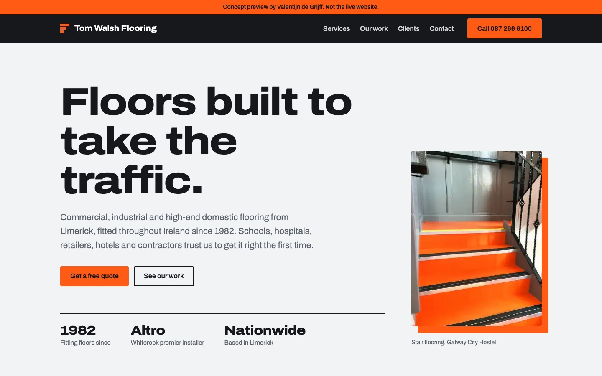
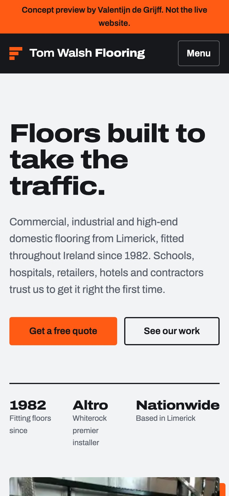
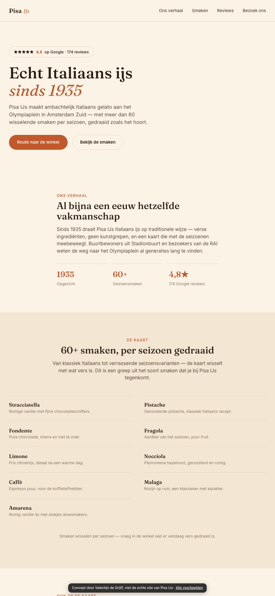
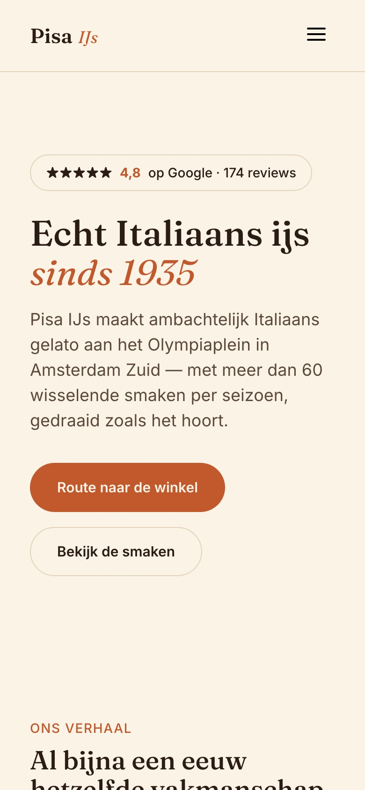
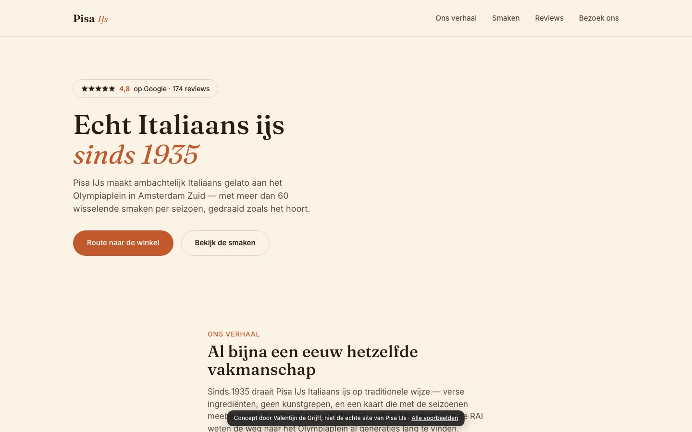
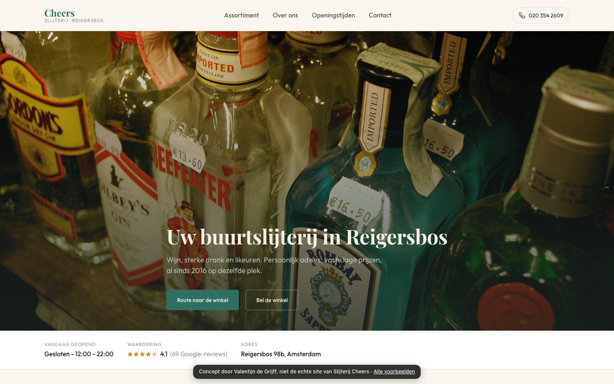
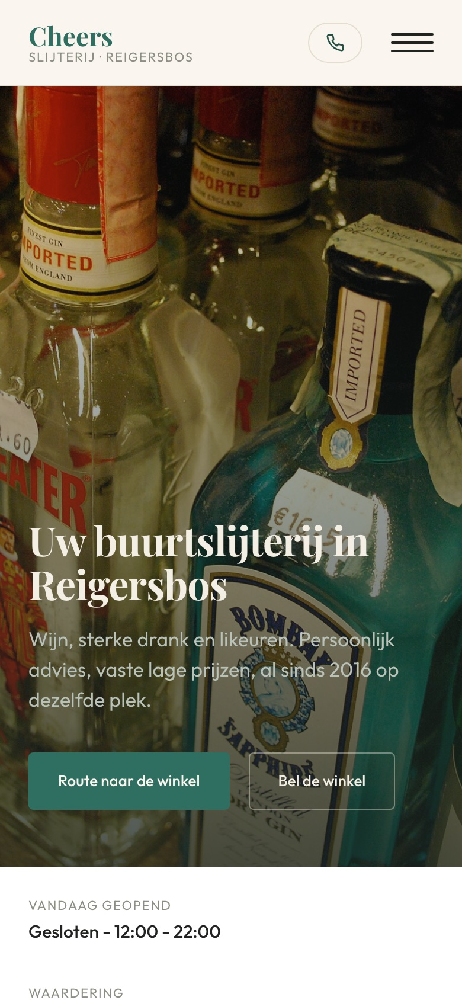
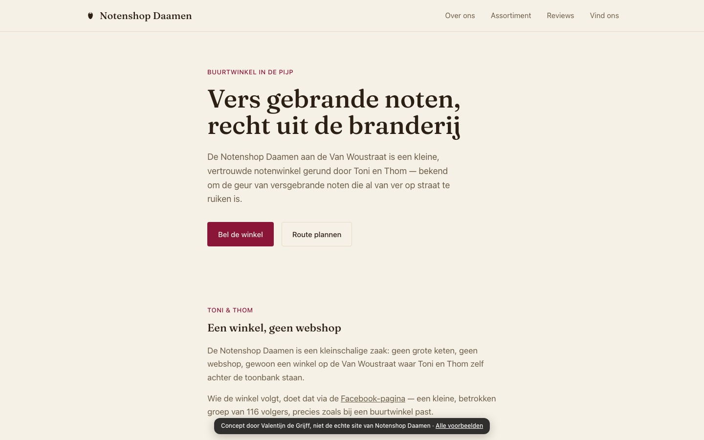
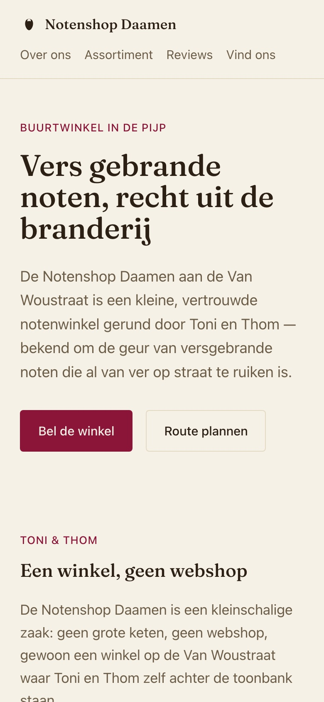

Tom Walsh Flooring
Een stoere, industriële site voor een vloerenbedrijf dat al sinds 1982 vloeren legt, met een voor-en-na-slider voor hun eigen projectfoto's.
Open de preview Tom Walsh FlooringIk ben Valentijn, 16 jaar, webdesigner uit Nederland. Ik bouw snelle, strakke websites voor kleine bedrijven. En voordat je iets betaalt, krijg je gratis een preview van je eigen site.
Gratis en vrijblijvend. Een nieuwe site vanaf €100.
Is je site gemaakt voor een groot scherm, dan zien ze piepkleine tekst en knoppen waar je niet op kunt tikken. Elke site die ik maak is eerst voor de telefoon ontworpen en ziet er op een groot scherm net zo goed uit.


Conceptsites die ik voor echte bedrijven heb gemaakt. Klik gerust door: het zijn volledig werkende previews.


Een stoere, industriële site voor een vloerenbedrijf dat al sinds 1982 vloeren legt, met een voor-en-na-slider voor hun eigen projectfoto's.
Open de preview Tom Walsh Flooring
Een warme site voor een Italiaanse ijssalon uit 1935: het verhaal, 60+ seizoenssmaken, de Google-reviews en de route, allemaal binnen één tik.
Open de preview Pisa IJs

Een buurtslijterij met het assortiment, de openingstijden en de route precies waar klanten ernaar zoeken.
Open de preview Slijterij Cheers

Een rustige, overzichtelijke site voor een kleine zaak in De Pijp: vers gebrande noten, wat klanten zeggen en waar je de winkel vindt.
Open de preview Notenshop DaamenIk maak een preview van je nieuwe site met je eigen teksten en foto's. Kost niks, nergens aan vast.
Bevalt het? Dan schaven we het samen bij. Niks voor jou? Dan houdt het daar gewoon op.
Ik maak de site af en zorg dat hij goed werkt op elke telefoon, tablet en computer.
Duidelijk vooraf, zonder verrassingen.
Stuur me de naam van je bedrijf of je huidige website, dan maak ik een gratis preview.
Mail Valentijn